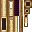
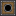
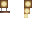
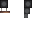
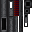
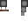
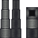
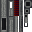
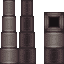
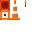

Create Big Cannons
附属模组
用机械动力的应力驱动一整套火炮
这是什么
把 Create 的动能接到火器上：炮管、炮闩、炮架、炮弹、引信，全部靠应力和转速运转。弹道有真实的装药与仰角计算，可以直接接进自动化产线里批量铸造。
命名空间：
createbigcannons 1.20.1 版本：本页物品与配方直接取自该版本的 jar。火炮部件127
机炮弹药createbigcannons:autocannon_cartridge
没有工作台/机器配方
青铜机炮炮管createbigcannons:bronze_autocannon_barrel
没有工作台/机器配方
青铜机炮炮闩createbigcannons:bronze_autocannon_breech
没有工作台/机器配方

青铜机炮复进弹簧createbigcannons:bronze_autocannon_recoil_spring
没有工作台/机器配方
青铜炮筒createbigcannons:bronze_cannon_barrel
没有工作台/机器配方
青铜炮腔createbigcannons:bronze_cannon_chamber
没有工作台/机器配方
青铜炮尾createbigcannons:bronze_cannon_end
没有工作台/机器配方
青铜速射炮闩createbigcannons:bronze_quickfiring_breech
没有工作台/机器配方
青铜楔式炮闩createbigcannons:bronze_sliding_breech
没有工作台/机器配方
青铜楔式闩体createbigcannons:bronze_sliding_breechblock
组合的火炮createbigcannons:built_up_cannon
没有工作台/机器配方
下界钢炮筒createbigcannons:built_up_nethersteel_cannon_barrel
没有工作台/机器配方
下界钢炮腔createbigcannons:built_up_nethersteel_cannon_chamber
没有工作台/机器配方
钢制炮筒createbigcannons:built_up_steel_cannon_barrel
没有工作台/机器配方
钢制炮腔createbigcannons:built_up_steel_cannon_chamber
没有工作台/机器配方
火炮构建器createbigcannons:cannon_builder
火炮构建器头createbigcannons:cannon_builder_head
没有工作台/机器配方
火炮铸件createbigcannons:cannon_cast
没有工作台/机器配方
火炮加工手杖createbigcannons:cannon_crafting_wand
没有工作台/机器配方
火炮钻孔机createbigcannons:cannon_drill
火炮钻头createbigcannons:cannon_drill_bit
没有工作台/机器配方

炮座扩展块createbigcannons:cannon_mount_extension
铸铁机炮炮管createbigcannons:cast_iron_autocannon_barrel
没有工作台/机器配方
铸铁机炮炮闩createbigcannons:cast_iron_autocannon_breech
没有工作台/机器配方
铸铁机炮复进弹簧createbigcannons:cast_iron_autocannon_recoil_spring
没有工作台/机器配方
铸铁炮筒createbigcannons:cast_iron_cannon_barrel
没有工作台/机器配方
铸铁炮腔createbigcannons:cast_iron_cannon_chamber
没有工作台/机器配方
铸铁炮尾createbigcannons:cast_iron_cannon_end
没有工作台/机器配方
铸铁速射炮闩createbigcannons:cast_iron_quickfiring_breech
没有工作台/机器配方
铸铁楔式炮闩createbigcannons:cast_iron_sliding_breech
没有工作台/机器配方
铸铁楔式闩体createbigcannons:cast_iron_sliding_breechblock
创造机炮弹药箱createbigcannons:creative_autocannon_ammo_container
没有工作台/机器配方
机炮弹壳（已装药）createbigcannons:filled_autocannon_cartridge
火炮铸件成品createbigcannons:finished_cannon_cast
没有工作台/机器配方

青铜机炮炮闩（半成品）createbigcannons:incomplete_bronze_autocannon_breech
没有工作台/机器配方
青铜机炮复进弹簧（半成品）createbigcannons:incomplete_bronze_autocannon_recoil_spring
没有工作台/机器配方
青铜楔式炮闩（半成品）createbigcannons:incomplete_bronze_sliding_breech
没有工作台/机器配方

铸铁机炮炮闩（半成品）createbigcannons:incomplete_cast_iron_autocannon_breech
没有工作台/机器配方

铸铁机炮复进弹簧（半成品）createbigcannons:incomplete_cast_iron_autocannon_recoil_spring
没有工作台/机器配方
铸铁楔式炮闩（半成品）createbigcannons:incomplete_cast_iron_sliding_breech
没有工作台/机器配方
下界钢螺式炮闩（半成品）createbigcannons:incomplete_nethersteel_screw_breech
没有工作台/机器配方

钢制机炮炮闩（半成品）createbigcannons:incomplete_steel_autocannon_breech
没有工作台/机器配方
钢制机炮复进弹簧（半成品）createbigcannons:incomplete_steel_autocannon_recoil_spring
没有工作台/机器配方
钢制螺式炮闩（半成品）createbigcannons:incomplete_steel_screw_breech
没有工作台/机器配方
钢制楔式炮闩（半成品）createbigcannons:incomplete_steel_sliding_breech
没有工作台/机器配方
大号下界钢身管层createbigcannons:large_nethersteel_cannon_layer
没有工作台/机器配方

大号钢制身管层createbigcannons:large_steel_cannon_layer
没有工作台/机器配方
中号下界钢身管层createbigcannons:medium_nethersteel_cannon_layer
没有工作台/机器配方
中号钢制身管层createbigcannons:medium_steel_cannon_layer
没有工作台/机器配方
下界钢炮筒createbigcannons:nethersteel_cannon_barrel
没有工作台/机器配方
下界钢炮腔createbigcannons:nethersteel_cannon_chamber
没有工作台/机器配方
下界钢螺式炮闩createbigcannons:nethersteel_screw_breech
没有工作台/机器配方
青铜机炮炮闩抽筒子（半成品）createbigcannons:partial_bronze_autocannon_breech_extractor
没有工作台/机器配方
铸铁机炮炮闩抽筒子（半成品）createbigcannons:partial_cast_iron_autocannon_breech_extractor
没有工作台/机器配方

钢制机炮炮闩抽筒子（半成品）createbigcannons:partial_steel_autocannon_breech_extractor
没有工作台/机器配方
机炮弹药（部分装填）createbigcannons:partially_filled_autocannon_cartridge
没有工作台/机器配方
机炮弹药（部分成型）createbigcannons:partially_formed_autocannon_cartridge
没有工作台/机器配方
小号下界钢身管层createbigcannons:small_nethersteel_cannon_layer
没有工作台/机器配方
小号钢制身管层createbigcannons:small_steel_cannon_layer
没有工作台/机器配方
钢制机炮炮筒createbigcannons:steel_autocannon_barrel
没有工作台/机器配方
钢制机炮炮闩createbigcannons:steel_autocannon_breech
没有工作台/机器配方
钢制机炮复进弹簧createbigcannons:steel_autocannon_recoil_spring
没有工作台/机器配方
钢制炮筒createbigcannons:steel_cannon_barrel
没有工作台/机器配方
钢制炮腔createbigcannons:steel_cannon_chamber
没有工作台/机器配方
钢制速射炮闩createbigcannons:steel_quickfiring_breech
没有工作台/机器配方
钢制螺式炮闩createbigcannons:steel_screw_breech
没有工作台/机器配方
钢制楔式炮闩createbigcannons:steel_sliding_breech
没有工作台/机器配方
加厚下界钢炮腔createbigcannons:thick_nethersteel_cannon_chamber
没有工作台/机器配方
加厚钢制炮腔createbigcannons:thick_steel_cannon_chamber
没有工作台/机器配方
青铜机炮炮管炮胚（未打孔）createbigcannons:unbored_bronze_autocannon_barrel
没有工作台/机器配方
青铜机炮炮管炮胚（未打孔）createbigcannons:unbored_bronze_autocannon_breech
没有工作台/机器配方
青铜机炮复进弹簧毛胚（未打孔）createbigcannons:unbored_bronze_autocannon_recoil_spring
没有工作台/机器配方
青铜炮筒炮胚（未打孔）createbigcannons:unbored_bronze_cannon_barrel
没有工作台/机器配方
青铜炮腔炮胚（未打孔）createbigcannons:unbored_bronze_cannon_chamber
没有工作台/机器配方
青铜楔式炮闩炮胚（未打孔）createbigcannons:unbored_bronze_sliding_breech
没有工作台/机器配方
铸铁机炮炮管炮胚（未打孔）createbigcannons:unbored_cast_iron_autocannon_barrel
没有工作台/机器配方
铸铁机炮炮闩炮胚（未打孔）createbigcannons:unbored_cast_iron_autocannon_breech
没有工作台/机器配方
铸铁机炮复进弹簧毛胚（未打孔）createbigcannons:unbored_cast_iron_autocannon_recoil_spring
没有工作台/机器配方
铸铁炮筒炮胚（未打孔）createbigcannons:unbored_cast_iron_cannon_barrel
没有工作台/机器配方
铸铁炮腔炮胚（未打孔）createbigcannons:unbored_cast_iron_cannon_chamber
没有工作台/机器配方
铸铁楔式炮闩炮胚（未打孔）createbigcannons:unbored_cast_iron_sliding_breech
没有工作台/机器配方
大号下界钢身管炮胚（未打孔）createbigcannons:unbored_large_nethersteel_cannon_layer
没有工作台/机器配方
大号钢制身管炮胚（未打孔）createbigcannons:unbored_large_steel_cannon_layer
没有工作台/机器配方
中号下界钢身管炮胚（未打孔）createbigcannons:unbored_medium_nethersteel_cannon_layer
没有工作台/机器配方
中号钢制身管炮胚（未打孔）createbigcannons:unbored_medium_steel_cannon_layer
没有工作台/机器配方
下界钢螺式炮闩炮胚（未打孔）createbigcannons:unbored_nethersteel_screw_breech
没有工作台/机器配方
小号下界钢炮坯（未打孔）createbigcannons:unbored_small_nethersteel_cannon_layer
没有工作台/机器配方
小号钢制炮坯（未打孔）createbigcannons:unbored_small_steel_cannon_layer
没有工作台/机器配方
钢制机炮炮筒炮胚（未打孔）createbigcannons:unbored_steel_autocannon_barrel
没有工作台/机器配方
钢制机炮炮闩炮胚（未打孔）createbigcannons:unbored_steel_autocannon_breech
没有工作台/机器配方
钢制机炮复进弹簧毛胚（未打孔）createbigcannons:unbored_steel_autocannon_recoil_spring
没有工作台/机器配方
钢制螺式炮闩炮胚（未打孔）createbigcannons:unbored_steel_screw_breech
没有工作台/机器配方
钢制楔式炮闩炮胚（未打孔）createbigcannons:unbored_steel_sliding_breech
没有工作台/机器配方
特大号下界钢炮坯（未打孔）createbigcannons:unbored_very_large_nethersteel_cannon_layer
没有工作台/机器配方
特大号钢制炮坯（未打孔）createbigcannons:unbored_very_large_steel_cannon_layer
没有工作台/机器配方
加小号下界钢炮坯（未打孔）createbigcannons:unbored_very_small_nethersteel_cannon_layer
没有工作台/机器配方
加小号钢制炮坯（未打孔）createbigcannons:unbored_very_small_steel_cannon_layer
没有工作台/机器配方

特大号下界钢身管层createbigcannons:very_large_nethersteel_cannon_layer
没有工作台/机器配方
特大号钢制身管层createbigcannons:very_large_steel_cannon_layer
没有工作台/机器配方
加小号下界钢身管层createbigcannons:very_small_nethersteel_cannon_layer
没有工作台/机器配方
加小号钢制身管层createbigcannons:very_small_steel_cannon_layer
没有工作台/机器配方
方向机createbigcannons:yaw_controller
没有工作台/机器配方
弹药与装药31
穿甲爆破弹createbigcannons:ap_shell
大型弹药冲压板createbigcannons:big_cartridge_sheet
→
大型弹药冲压板工作台废铜createbigcannons:bronze_scrap
流体弹createbigcannons:fluid_shell
高爆弹createbigcannons:he_shell
碰炸引信createbigcannons:impact_fuze
熔融下界钢createbigcannons:molten_nethersteel
没有工作台/机器配方
熔融下界钢桶createbigcannons:molten_nethersteel_bucket
没有工作台/机器配方
下界钢锭createbigcannons:nethersteel_ingot
大型弹药（部分成型）createbigcannons:partially_formed_big_cartridge
没有工作台/机器配方
废钢createbigcannons:steel_scrap
材料与铸件17
方块穿透抗性检测工具createbigcannons:block_armor_inspection_tool
熔融青铜createbigcannons:molten_bronze
没有工作台/机器配方
熔融青铜桶createbigcannons:molten_bronze_bucket
没有工作台/机器配方
熔融铸铁createbigcannons:molten_cast_iron
没有工作台/机器配方
熔融铸铁桶createbigcannons:molten_cast_iron_bucket
没有工作台/机器配方
熔融钢createbigcannons:molten_steel
没有工作台/机器配方
熔融钢桶createbigcannons:molten_steel_bucket
没有工作台/机器配方
其它21
工作盆铸造盖createbigcannons:basin_foundry_lid
凝硝createbigcannons:congealed_nitro
火棉createbigcannons:guncotton
硬化的硝createbigcannons:hardened_nitro
没有工作台/机器配方
迫击炮弹createbigcannons:mortar_stone_projectile
没有工作台/机器配方
包装火棉createbigcannons:packed_guncotton
复进弹簧（半成品）createbigcannons:partial_recoil_spring
没有工作台/机器配方
机枪弹药（部分组装）createbigcannons:partially_assembled_machine_gun_round
没有工作台/机器配方
速射构件createbigcannons:quickfiring_mechanism
复进弹簧createbigcannons:recoil_spring
曳光装置createbigcannons:tracer_tip

路锥createbigcannons:traffic_cone
没有工作台/机器配方